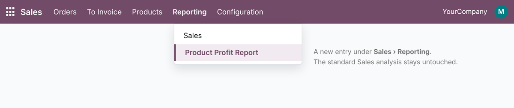
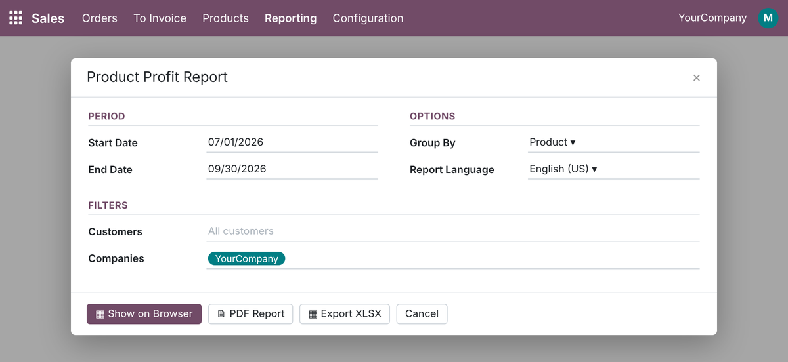
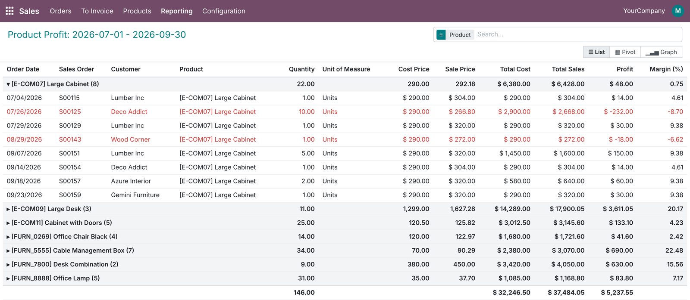
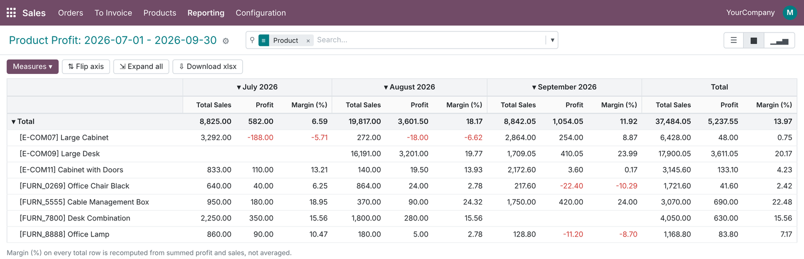
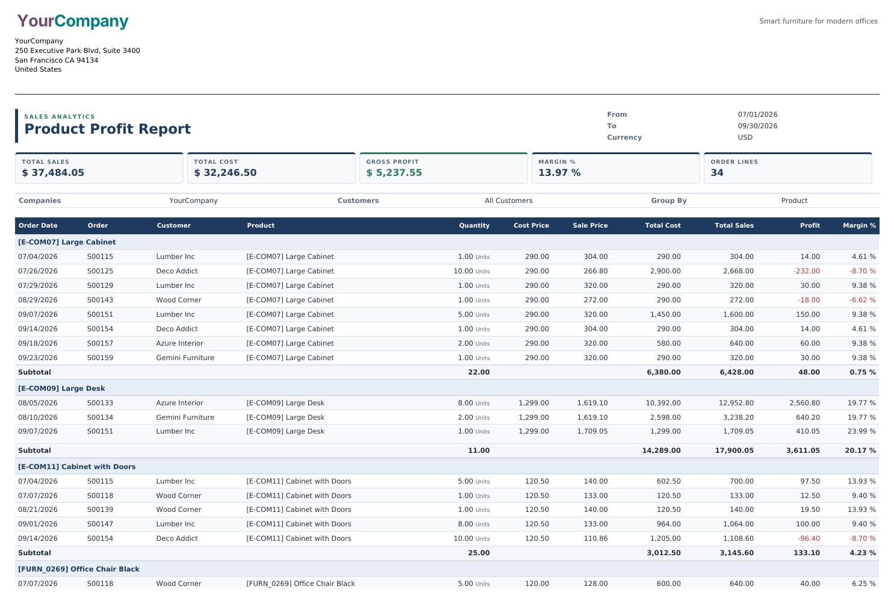
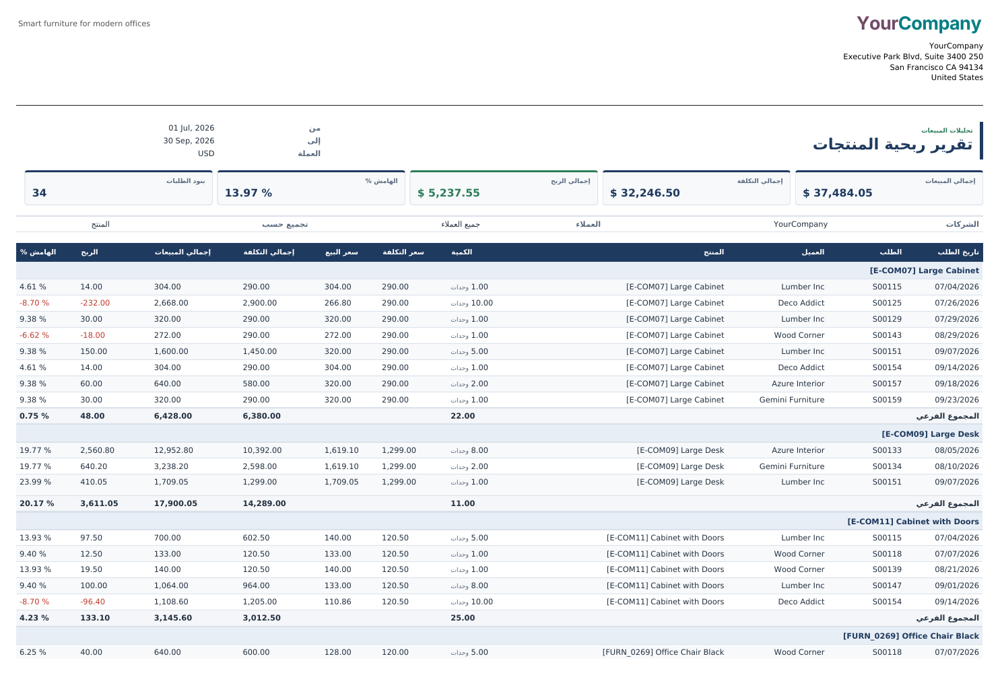
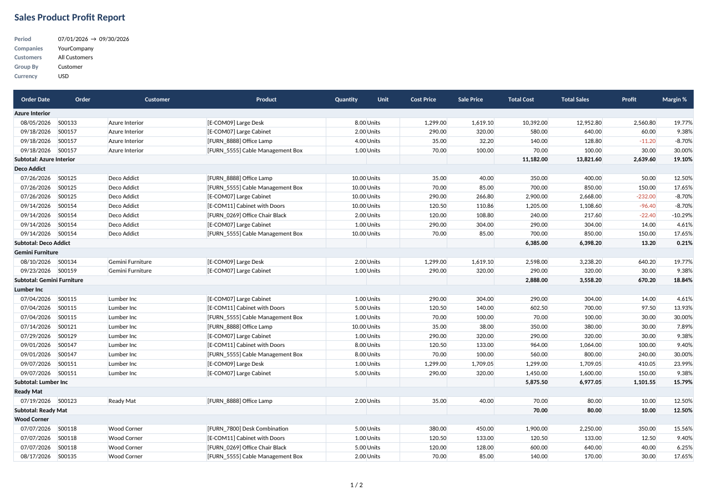

See exactly how much every product earns on your confirmed sales orders: cost, sale price, profit and margin % per line, with correct subtotals. Open it on screen, print a clean PDF, or export to Excel – in English or Arabic with full right-to-left layout.
Standard Odoo knows your cost and your sale price, but turning them into a profit report you can hand to management takes manual work.
Four steps, no configuration.
The screenshots use demo data: 16 confirmed sales orders with 34 lines for 6 customers and 7 furniture products, July–September 2026, in USD, including five loss-making lines.
The module adds Sales › Reporting › Product Profit Report. The standard Sales analysis and its reports are left exactly as they are.

Pick Start Date and End Date (defaults: first day of this month to today), optional Customers (orders of their contacts are included) and Companies. Choose Group By – No Grouping, Customer, Product or Sales Order – and the Report Language. Then click Show on Browser, PDF Report or Export XLSX. A start date after the end date, or companies with different currencies, are refused with a clear message.

Show on Browser opens Product Profit Analysis with your filters applied and your grouping preselected. Each row shows Order Date, Sales Order, Customer, Product, Quantity, Cost Price, Sale Price, Total Cost, Total Sales, Profit and Margin (%); loss lines turn red. Search filters Loss Lines and Missing Cost find problems in one click, and you can regroup by customer, product, category, order, salesperson, company or month.

Switch to Pivot for products by month. Margin (%), Cost Price and Sale Price on every total are recomputed from summed amounts, so the July total of 6.59 % really is July’s profit divided by July’s sales. A Graph view of profit per product is included too.

PDF Report prints an A4 landscape document under your company’s own report layout: title band with period and currency, KPI cards (Total Sales, Total Cost, Gross Profit, Margin %, Order Lines), the filters used, then every line with group subtotals and a Grand Total. A dedicated paper format reserves room for the header, the table header repeats on each page and rows never split, so the header and table never overlap.

Set Report Language to Arabic and the same report comes out fully translated and mirrored: columns run right to left, numbers stay readable, and mixed values such as [E-COM07] Large Cabinet keep their bracket order. The Excel export switches its sheet to right-to-left as well. Every label, menu, field and message ships with an ar_001 translation.

Export XLSX downloads SO_Product_Profit_<start>_<end>.xlsx with the filters on top, a frozen header row with autofilter, group rows, Subtotal rows and a Grand Total. Amounts stay numeric, margin is a real percentage format, losses are red, and the sheet prints landscape on A4 fitted to the page width.

Simple, documented formulas – the same in all three outputs.
sale_margin × quantityWhy weighted totals matter – the eight Large Cabinet lines from the demo data:
| Method | Large Cabinet margin |
|---|---|
| Average of the eight line percentages | 3.93 % (misleading) |
| This module: $ 48.00 profit ÷ $ 6,428.00 sales | 0.75 % |
Each of these is handled in code and most are covered by the automated tests.
The report shows product cost, so it is limited to users who already see all sales documents.
| Who | Sees |
|---|---|
| Sales – User: All Documents | The menu, the wizard and all three outputs (read-only analysis) |
| Sales – Administrator | Same, inherited from All Documents |
| Sales – User: Own Documents Only | No access to the report |
| Multi-company | A global record rule limits lines to the companies selected in the company switcher |
| Odoo version | 19.0, Community and Enterprise |
| Depends on | sale_management, sale_margin |
| Python dependency | xlsxwriter (already shipped with Odoo) |
| Menus | Sales › Reporting › Product Profit Report |
| Settings | None needed. Paper format SO Product Profit (A4 Landscape) can be adjusted in Settings › Technical › Paper Format if your header is unusually tall. |
| Models | so.product.profit.wizard (wizard), so.product.profit.report (read-only SQL view), report.so_product_profit_report.report_so_product_profit (PDF) |
| Automated tests | 23 TransactionCase tests: wizard defaults and validation, line and total math, weighted subtotals, pivot recomputation, multi-currency, customer, date and time-zone filters, cancelled and locked orders, browser / PDF / XLSX outputs, Arabic translation and RTL |
| Translations | Arabic (ar_001) included; .pot template for other languages |
| License | LGPL-3 |
Questions, a demo, or an adaptation to your own process? Get in touch.
✉ ibrahim.yahiah@gmail.com LinkedIn: Ibrahim YahiaAuthor: Ibrahim Yahia · License: LGPL-3